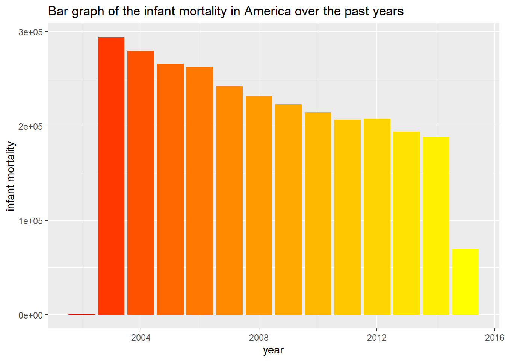

# Relational databases
About the exercise
In this exercise I learned about SQL and database-skills. firstly, the data was imported from this GitHub page. After that the data is manipulated in such a way that the 3 datasets can be merged together. At last the data is visualized in 3 different plots.
A
Load the flu (“./data/flu_data.csv), the dengue (.”/data/dengue_data.csv) and the gapminder ({dslabs} package) into three separate dataframes in R
#Load the flu dataset
flu_data_import <- read.csv("data/flu_data.csv", skip = 11)
#Load the dengue dataset
dengue_data_import <- read.csv("data/dengue_data.csv", skip = 11)
#Load the gapminder dataset
gapminder <- dslabs::gapminderAfter the datasets were loaded I had to adjust the way the data is presented
B
Check if they are in the right shape. Is the data in the ‘tidy’ format? If not change the format to ‘tidy’
#Make flu_data tidy
flu_data_tidy <- flu_data_import %>% tidyr::pivot_longer(cols = Argentina:Uruguay,
names_to = "country",
values_to = "value")
head(flu_data_tidy)## # A tibble: 6 x 3
## Date country value
## <chr> <chr> <int>
## 1 2002-12-29 Argentina NA
## 2 2002-12-29 Australia NA
## 3 2002-12-29 Austria NA
## 4 2002-12-29 Belgium NA
## 5 2002-12-29 Bolivia NA
## 6 2002-12-29 Brazil 174#Make dengue_data tidy
dengue_data_tidy <- dengue_data_import %>% tidyr::pivot_longer(cols = Argentina:Venezuela,
names_to = "country",
values_to = "value")
head(dengue_data_tidy)## # A tibble: 6 x 3
## Date country value
## <chr> <chr> <dbl>
## 1 2002-12-29 Argentina NA
## 2 2002-12-29 Bolivia 0.101
## 3 2002-12-29 Brazil 0.073
## 4 2002-12-29 India 0.062
## 5 2002-12-29 Indonesia 0.101
## 6 2002-12-29 Mexico NAOne of the first steps in analysing datasets is to make them tidy. Tidy datasets provide a way to link the structure of a dataset (the layout) with its semantics (what values are in the dataset).
c
Change the country and date variables of the three tables so that they coincide in terms of data type, class and values
##FLU DATASET
#Seperate the flu date
flu_data_equal <- flu_data_tidy %>% separate("Date", into = c("year", "month", "day"), sep = "-")
#Change the data type
flu_data_equal$year <- as.integer(flu_data_equal$year)
flu_data_equal$country <- as.factor(flu_data_equal$country)
#Delete the day and month column
flu_data_equal <- flu_data_equal[-c(2,3)]
head(flu_data_equal)## # A tibble: 6 x 3
## year country value
## <int> <fct> <int>
## 1 2002 Argentina NA
## 2 2002 Australia NA
## 3 2002 Austria NA
## 4 2002 Belgium NA
## 5 2002 Bolivia NA
## 6 2002 Brazil 174##DENGUE DATASET
#Seperate the dengue date
dengue_data_equal <- dengue_data_tidy %>% separate("Date", into = c("year", "month", "day"), sep = "-")
#Change the data type
dengue_data_equal$year <- as.integer(dengue_data_equal$year)
dengue_data_equal$country <- as.factor(dengue_data_equal$country)
#Delete the day and month column
dengue_data_equal <- dengue_data_equal[-c(2,3)]
head(dengue_data_equal)## # A tibble: 6 x 3
## year country value
## <int> <fct> <dbl>
## 1 2002 Argentina NA
## 2 2002 Bolivia 0.101
## 3 2002 Brazil 0.073
## 4 2002 India 0.062
## 5 2002 Indonesia 0.101
## 6 2002 Mexico NAAs you can see, the datasets are similar in structure. This makes it easy to merge the datasets together.
D
Store the three tables as separate (so six in total) .csv and .rds files.
#Store the files as .csv
write.csv(flu_data_equal, "data/flu_data_equal.csv", row.names = FALSE)
write.csv(dengue_data_equal, "data/dengue_data_equal.csv", row.names = FALSE)
write.csv(gapminder, "data/gapminder.csv", row.names = FALSE)
#Store the files as .rds
saveRDS(flu_data_equal, "data/flu_data_equal.rds")
saveRDS(dengue_data_equal, "data/dengue_data_equal.rds")
saveRDS(gapminder, "data/gapminder.rds")E
In Dbeaver create a new PostgreSQL database “workflowsdb”
#I left out my password, therefore the code will not work. If you have Postgres you can fill in your own details.
#Delete every, eval=FALSE from the headliners of the chunk. Than this Rmarkdown file will work.
con <- dbConnect(RPostgres::Postgres(),
dbname = "myfirstdb",
host="localhost",
port="5432",
user="postgres",
password="xxx") For privacy reasons I left out my password, therefore the code will not work. If you have Postgres you can fill in your own details. After that delete every: eval=FALSE from the headliners of the chunk. Than this Rmarkdown file will work.
F
Using RPostgreSQL, insert the tables into the database.
dbWriteTable(con, "dengue_data_db", dengue_data_equal, overwrite = T)
dbWriteTable(con, "flu_data_db", flu_data_equal, overwrite = T)
dbWriteTable(con, "gapminder_db", gapminder, overwrite = T)After connecting to a PostgreSQL database (using the RPostgres package) I inserted the 3 different tables into one database.
G
Inspect the contents of the tables with SQL (in DBeaver) and save the SQL script.
SELECT * FROM "dengue_data_db";
SELECT * FROM "flu_data_db";
SELECT * FROM "gapminder_db";H
Inspect the contents of the tables with dplyr (in R) and save a RMarkdown showing what you are doing.
db_names <- c("flu_data_db", "dengue_data_db", "gapminder_db")
databases <- list()
for (x in db_names){
databases[[paste(x)]] <- dbReadTable(con, x)
}
#inspect the data
#databases[1]
#databases[2]
#databases[3]I
Load the gapminder data in R and change the dataframe in such as way that you could join it to dengue and flue.
#Filter the year of gapminder_db from 2002 to 2015, so it will fit the data format of dengue and flue
gapminder_change <- databases[3] %>% as.data.frame()
gapminder_filter <- gapminder %>% filter(between(year, 2002, 2015)) J
Save this clean gapminder data in the “workflowsdb” database
dbWriteTable(con, "gapminder_filter", gapminder_filter, overwrite = T)K
Perform some joins (your choice) with SQL (can be done in DBeaver or with dplyr.
#Combine all the tables with left_join
data_dengue_flu <- left_join(dengue_data_equal, flu_data_equal, by = c("country", "year"))
data_all_tables <- left_join(data_dengue_flu, gapminder_filter, by = c("country", "year"))I chose to do perform the joins with dplyr. The data is joined on the variable country and year.
L
Generate a joined table, and export this from the database to R.
The combined dataframe is already in R (called data_all_tables)
M
Show some descriptive statistics with this table, and at least 3 visualisations using ggplot2.
#Plot 1, show the fertility over the past years in America
fertility_america <- data_all_tables %>% filter(continent == "Americas") %>% select(fertility, year)
fertility_america
#Filter countries on Brazil, Mexico and Bolivia
data_3_countries <- data_all_tables %>% filter(country == c("Brazil", "Mexico", "Bolivia"))
#Plot1, life expectancy in the continents
ggplot(data_3_countries, aes(x = country, y = life_expectancy)) +
geom_boxplot(aes(fill = country),
outlier.colour = "black") +
labs(title = "Boxplot of the life expectancy in Brazil, Mexico and Bolivia",
y = "life expectancy",
x = "")To show you the plots I made without sharing you my password, I have include the plots via knitr.
Below you can find the 3 plots I have created with ggplot.
In the first plot you will see a boxplot of the Life expectancy in Brazil, Mexico and Bolivia.
In the second plot you see a bar graph of the flu data over the years in America.
In the third plot you see a bar graph of the infant mortality in America over the past few years
#Include the first plot
knitr::include_graphics(
here::here(
"_book",
"_main_files",
"figure-html",
"Relational_databases_plot1.png"
)
)#plot 2, show the flu data over the past few years in the continent America
flu_america <- data_all_tables %>% filter(continent == "Americas") %>% select(value.x, year)
ggplot(data=flu_america) +
geom_col(aes(x = year, y = value.x, fill = year), show.legend = FALSE) +
labs(title = "Bar graph of the flu data over the years in America",
y = "")#Include the second plot
knitr::include_graphics(
here::here(
"_book",
"_main_files",
"figure-html",
"Relational_databases_plot2.png"
)
)#plot 3, line graph of the dengue data in azia over the years
dengue_America <- data_all_tables %>% filter(continent == "Americas") %>% select(infant_mortality, year)
ggplot(data = dengue_America) +
geom_col(aes(x = year, y = infant_mortality, fill = year), show.legend = FALSE)+ scale_fill_gradient(low="red", high="yellow") +
labs(title = "Bar graph of the infant mortality in America over the past years",
y = "infant mortality")#Include the third plot
knitr::include_graphics(
here::here(
"_book",
"_main_files",
"figure-html",
"Relational_databases_plot3.png"
)
)